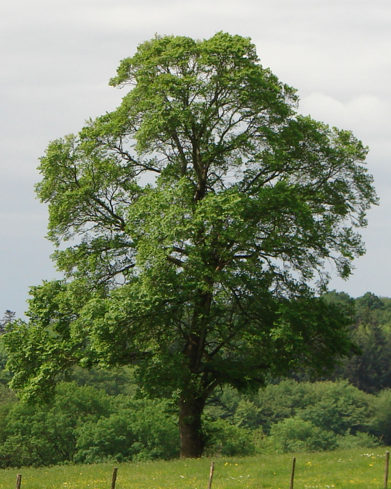

- Familia: Ulmaceae (familia de los olmos).
- Tronco: es recto y leñoso, con un diámetro que varía según la especie y la edad del árbol. En los árboles maduros, el tronco puede alcanzar diámetros de hasta 1 metro o más, proporcionando una estructura sólida y robusta.
- Corteza: es generalmente de color gris a marrón, con una textura que varía desde lisa en los árboles jóvenes hasta rugosa y agrietada en los árboles más viejos. En algunas especies, la corteza puede desprenderse en placas.
- Copa: es amplia y extendida, con una forma que puede ser redondeada o en forma de sombrilla. La disposición de las ramas suele ser abierta, lo que permite una buena penetración de luz y proporciona una sombra densa.
- Hoja: son alternas, simples y de forma ovalada o elíptica, con bordes dentados o aserrados. Las hojas son de color verde brillante en la mayoría de las especies, y pueden cambiar a tonos amarillos o marrones en otoño. Las hojas son generalmente de tamaño mediano, con una textura rugosa o áspera.
- Flor: son pequeñas y discretas, agrupadas en inflorescencias de tipo amento o racimo. Las flores son generalmente de color verde a amarillo y aparecen en primavera, antes de que broten completamente las hojas.
- Fruto: es una samara, una cápsula alada que contiene una sola semilla. Las samarás son de forma redondeada o ovalada y tienen una estructura alada que ayuda en la dispersión por el viento. Los frutos maduran en verano y se dispersan durante el otoño.
- Usos: se valoran tanto por su madera dura como por sus aplicaciones ornamentales. La madera de olmo es utilizada en la fabricación de muebles, pisos y construcciones debido a su durabilidad. Además, los olmos son populares en jardinería y paisajismo por su capacidad para proporcionar sombra y su atractivo follaje. También se utilizan en proyectos de reforestación y en la estabilización de suelos.
- Floración: ocurre en primavera, antes de que broten completamente las hojas. Las flores pequeñas y discretas se agrupan en amentos o racimos que pueden ser visibles en el árbol.
- Fructificacion: sigue a la floración, con la producción de samarás que maduran en verano. Las samarás se abren para liberar las semillas que son dispersadas por el viento.
- Reproducción: se reproduce principalmente por semillas. Las samarás se cosechan de los frutos maduros y se siembran en condiciones adecuadas para germinar. También se puede propagar por esquejes o acodos en algunas especies, aunque esto es menos común.
Hoja
Fruto
Semillas